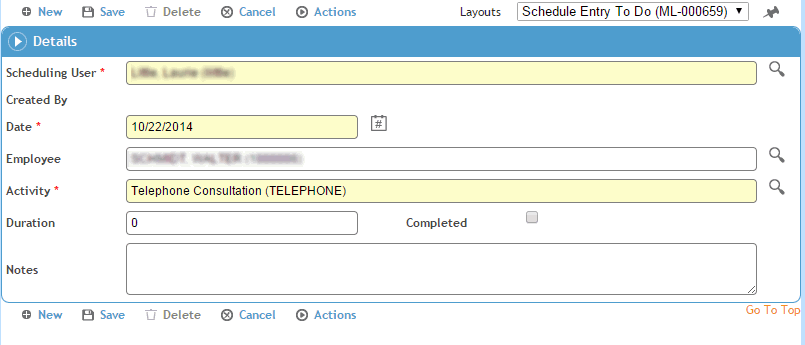

In Daily View, you can schedule reminders of activities for individual users. Scheduling reminders creates a daily To Do list for the user, and is similar to scheduling an activity, except that the reminder is displayed in the To Do list rather than on the schedule.
At the top of the To Do section, click New.

Enter data the same as for Scheduling Activities and click Save. The reminder appears in the To-Do section on the Daily View.
To edit an existing reminder, click the button beside the entry to open it. Make your changes and click Save.
Once you’ve completed a To Do entry, click the button beside the entry to open it and select the Complete checkbox. The entry is removed from the To Do list effective the next day.
To delete a reminder, click the button beside the entry to open it and click Delete.
You can send a reminder letter instead of, or in addition to, a To Do list reminder: open the Schedule Entry and choose Actions»Generate Reminder Letter. For more information, see Generating a Letter.